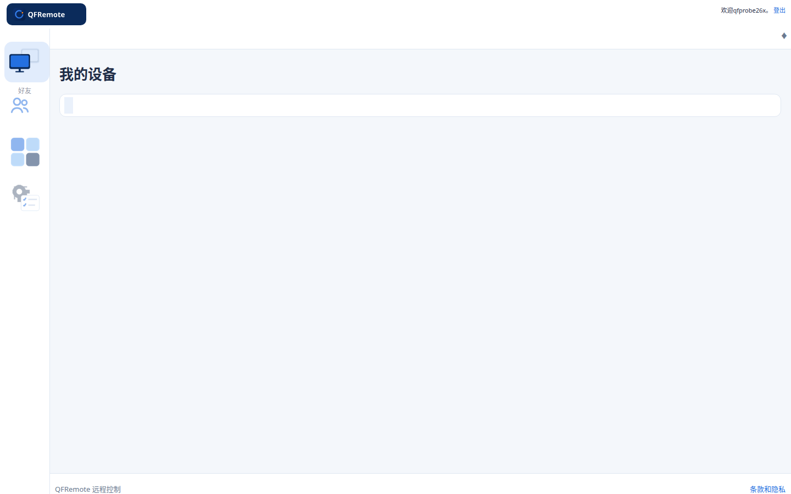
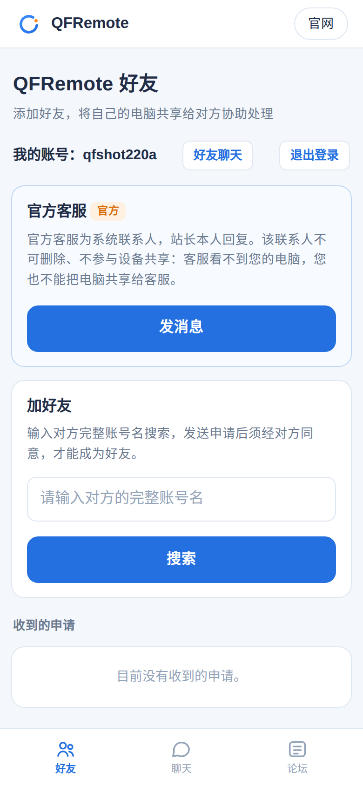
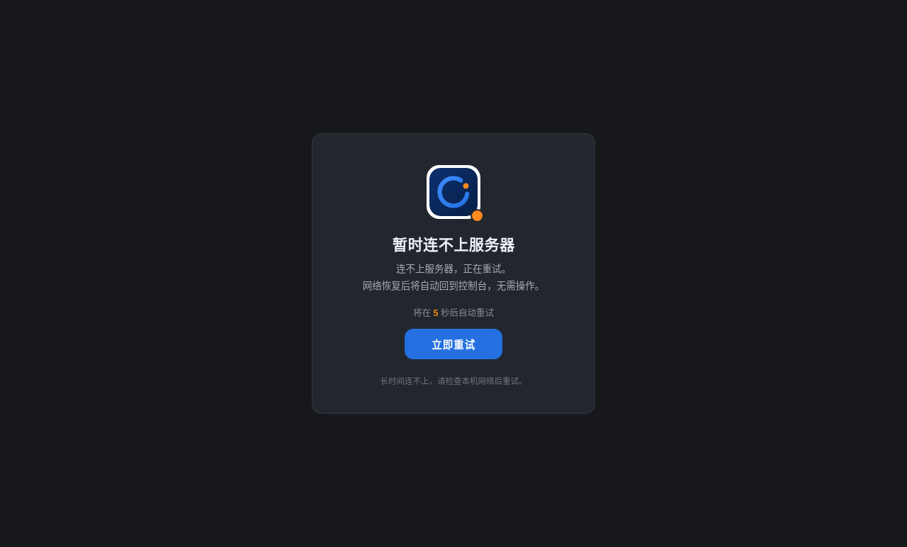
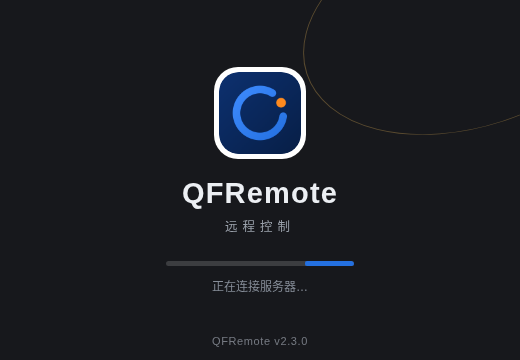

远程桌面，实时操控
被控电脑的画面实时传输至控制端，鼠标与键盘操作与在本机前使用一致。即使被控电脑前无人值守，也可完成所需操作。
即将发布的版本 2.3.0 集中于四项核心改进：连接更稳定，中断后自动恢复；登录一次，全部功能直接使用；底层组件全面升级，运行更为流畅；远程画面实时清晰，操作与在本机前一致。
现行版本可正常下载使用；新版本发布后，已安装用户可直接在软件内完成更新。完整更新内容将在发布时于本页更新日志公布。


本次更新
即将发布的版本 2.3.0 不追求功能数量，集中力量改进四件对日常使用影响最大的事项。其余细项改进将在发布时记录于本页更新日志，不在此逐项列举。
远程控制的前提是连接可靠。QFRemote 以三层机制保障连接：被控端组件随系统自动启动并回连，服务器服务异常时自动恢复，控制端在会话中断后自动重连。连接中断后无需人工干预即可恢复，且不退出登录状态。
查看自动重连机制说明 →
新版本只需登录一次：登录状态最长保持三十天，软件重启、断线重连或服务器重启后自动恢复；好友、聊天、论坛、积分与管理等功能直接使用，不再逐项重复验证；相关页面在软件窗口内直接打开，聊天打开即可查看记录。

新版本将三端核心组件升级至当前稳定版本，并针对界面渲染、长列表滚动与页面切换逐项优化。升级遵循成熟产品的通行做法，以系统级组件与硬件加速为基础，而非仅调整表面样式，确保三端的响应速度与操作手感保持一致。
被控电脑的画面实时传输至控制端，鼠标与键盘操作与在本机前使用一致；文件管理与远程终端随画面一并提供，临时处理问题或长期无人值守均可胜任。手机浏览器、安卓应用与电脑客户端呈现同一套界面，换设备使用无需重新适应。
查看软件界面展示 →
核心功能
被控电脑的画面实时传输至控制端，鼠标与键盘操作与在本机前使用一致。即使被控电脑前无人值守，也可完成所需操作。
可远程浏览被控电脑中的文件，支持上传、下载与整理，无需他人代为发送文件。
提供远程终端功能，可执行命令、查看系统状态与处理问题，无需每次开启远程桌面。
为他人开通账号时，可查看与可操作的权限可逐项设置，并设有总开关统一开启或关闭。账号可随时收回，收回后立即失效。
服务器每日自动检测木马与后门程序并处理异常，系统安全补丁自动更新；登录环节设有防暴力破解保护，连续多次输错密码将触发账号保护。
新版本可直接在软件内完成更新，无需另行下载安装包。每次更新的具体内容均在本页更新日志中公布。
提供亮蓝与深灰两套主题，可一键切换；深色主题采用深灰配色，不使用纯黑，长时间使用更舒适。
手机端无需安装软件，使用浏览器打开控制台即可查看画面并进行操作，便于临时处理问题。
可按账号搜索并发送好友申请，对方同意后即成为好友；可将自己的一组电脑共享给好友协助处理，共享权限可设为仅查看或可操作，删除好友后共享自动收回。好友之间支持端到端加密聊天。
打开好友页面 →论坛设有使用求助、建议反馈、综合讨论与官方公告板块；使用 QFRemote 账号登录后可发帖，游客可浏览。帖子内容经机器初审与人工复核，广告引流及违规内容将不予通过。
进入论坛 →重点功能
在远程控制中，连接中断是最影响使用的问题：若需专人到被控电脑前手动恢复，远程控制便失去意义。QFRemote 通过三层机制保障自动恢复：只要软件保持运行，连接中断后即自动重连，不限次数，不弹窗打扰，也不会退出登录状态。
安装在被控电脑上的组件以系统服务方式运行：被控电脑重启、系统更新或服务器重启后，组件随开机自动启动并重新连接。经实测，服务器重启后，被控端可在数秒内自动恢复连接，全程无需人工操作。
服务器端服务设有崩溃自动重启与开机自启，并每小时执行一次自检，发现异常先行自我修复。经实测，受控重启一次后，网页控制台约 6 秒恢复访问。
控制软件内置连接监护机制：识别到会话断开后自动发起重连，直至恢复为止；整页连接中断时，页面按倒计时自动重试。恢复期间仅在工具栏显示状态提示，用户无需进行任何操作。
界面预览
以下图片均为软件实际运行画面，非效果图。
下载
Windows 10 / 11（64 位）
—
下载后可对照上方公布的 SHA-256 校验码，确认安装包完整且未被篡改。首次打开时如出现 Windows 安全提示，请点「更多信息 → 仍要运行」（本软件暂未购买代码签名证书）。
更新日志
常见问题